TherMOO · compact experimental figures
18 fixed scientific figure slots. No population trajectories or experiment progress charts.
01 ranks
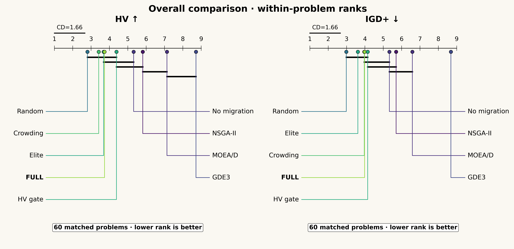
Each problem contributes one seed-median rank. The fixed core excludes SMS-EMOA, which is included in all available pairwise comparisons and many-objective matrices. ZDT5 is kept in the raw table as a separate binary cohort. CD uses Nemenyi, alpha=.025 per metric, and is drawn only after the Friedman gate and 30 matched seeds per problem. Bars mean no detected difference, not equivalence.
Vector PDF02 families
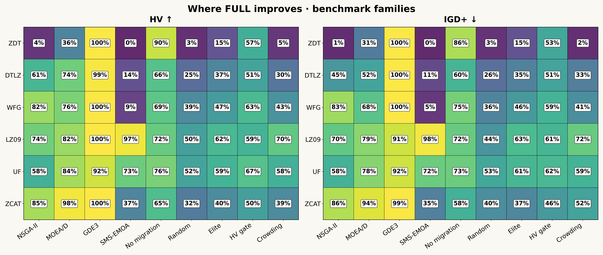
Cells are P(FULL better)+0.5 P(tie), averaged after within-problem seed pairing. Each problem has equal weight within its family. 50% is neutral. Available pair counts can differ; exact n and problem counts are in the figure CSV. No family-level significance claim is made.
Vector PDF03 corrected comparisons
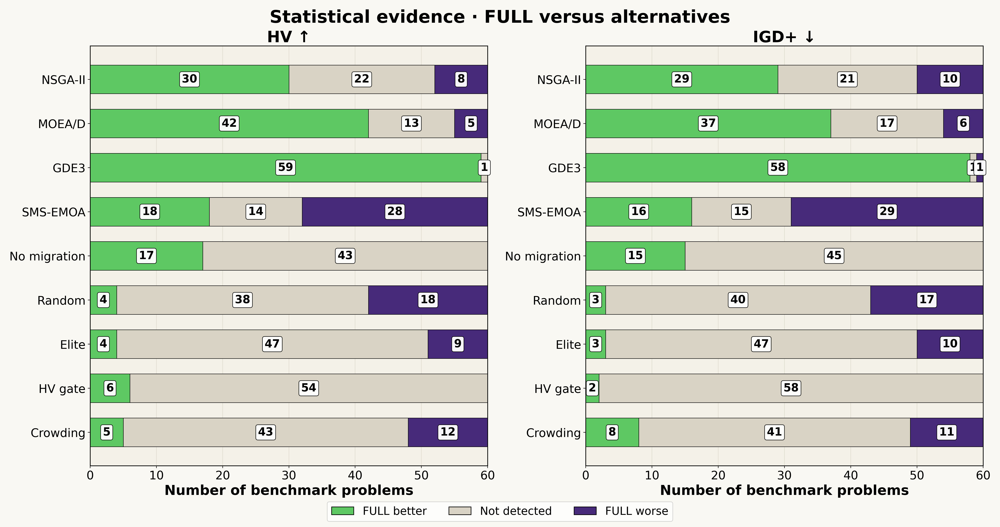
Only the exact seeds 0–29 with equal initial hashes enter inference. Shapiro is applied to paired differences; paired t or Wilcoxon-Pratt is used accordingly. Holm covers both metrics and all planned hypotheses of the block, including unfinished comparisons. Not detected is not evidence of equality.
Vector PDF04 profiles
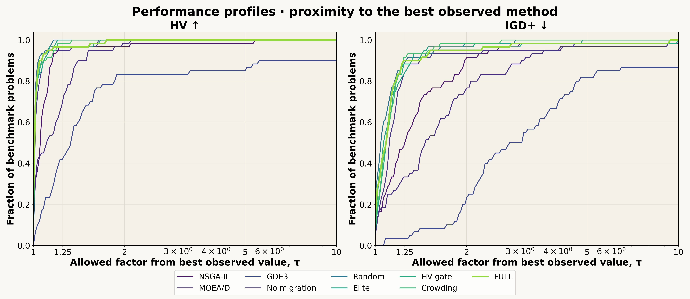
Same balanced core problem and seed panel as figure 01. Ratios are best/HV and IGD+/best, computed within each problem from seed medians. 0/0 is a tie (ratio 1); a nonzero loss against a zero best value is infinite. The reference is the best observed competitor, not a certified optimum.
Vector PDF05 practical effect
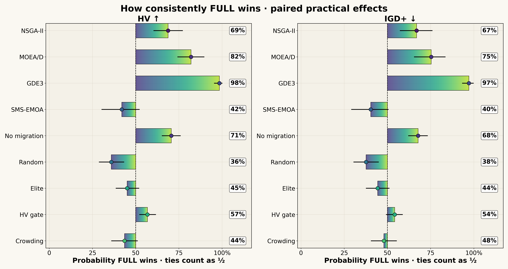
Pairing is within an identical function, M, D, budget and setting. Problem-level win probabilities receive equal weight. Whiskers resample problems and their paired seeds; these descriptive intervals are not Holm tests. The exact panel for every alternative is exported.
Vector PDF06 joint metrics
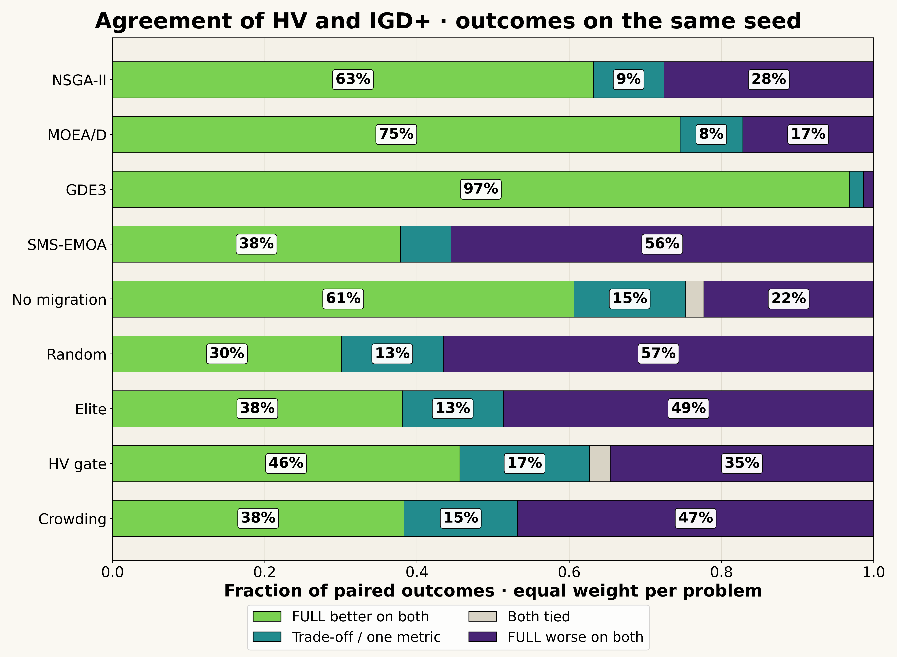
Both metrics use the exact same paired seed and initial population. Each problem first yields category proportions; these proportions are then averaged equally over problems. Mixed includes improvement in one metric and deterioration or numerical tie in the other. This is descriptive, not a Pareto-front attainment probability.
Vector PDF07 convergence hv
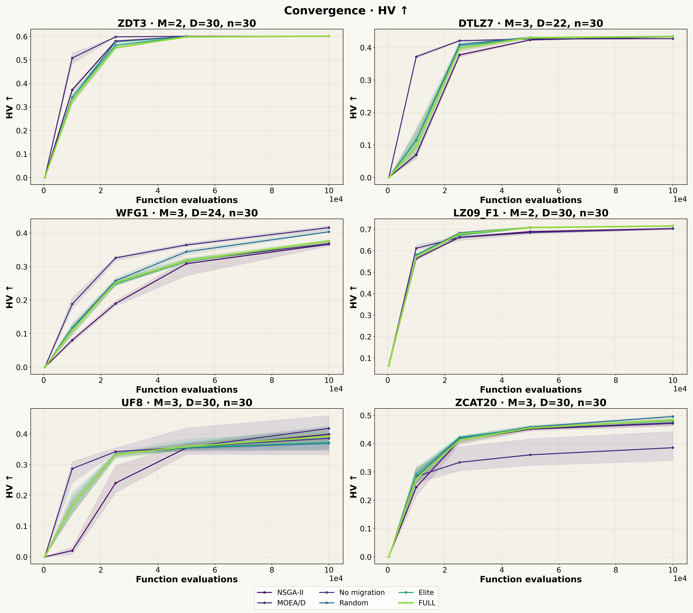
Each axis is one fixed problem/M/D; raw metrics are never pooled across axes. Medians and IQR use the same seed set for all six methods and all five actual recorded FE points. One example per family is selected by a fixed name priority and availability, never by outcome. Primary choices are ZDT3, DTLZ7, WFG1, LZ09_F1, UF8, ZCAT20; fallback names are documented in the source. Full numerical membership is exported.
Vector PDF08 convergence igd plus
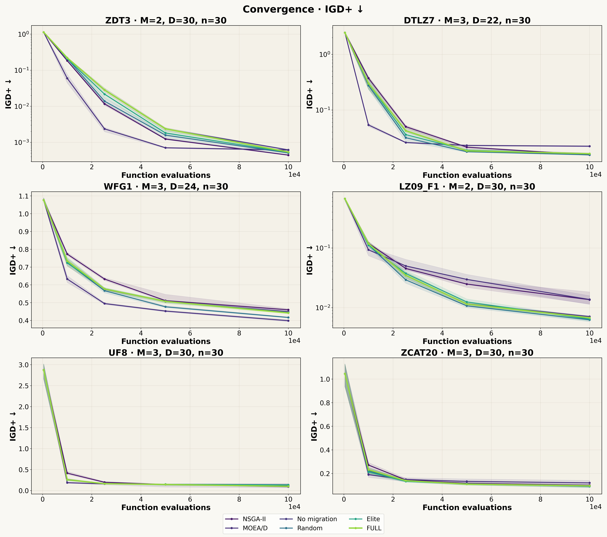
Each axis is one fixed problem/M/D; raw metrics are never pooled across axes. Medians and IQR use the same seed set for all six methods and all five actual recorded FE points. One example per family is selected by a fixed name priority and availability, never by outcome. Primary choices are ZDT3, DTLZ7, WFG1, LZ09_F1, UF8, ZCAT20; fallback names are documented in the source. Full numerical membership is exported.
Vector PDF09 seed distributions
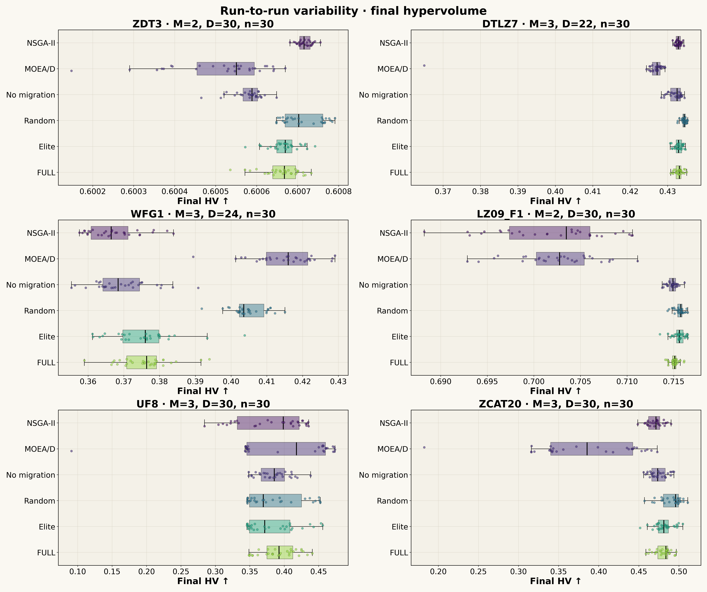
Each axis preserves the raw HV scale of one fixed task. The same seeds and methods are used within an axis. Boxes show median, quartiles and 1.5 IQR whiskers; every measured seed is also plotted. Box overlap is not used as a significance test.
Vector PDF10 ablations
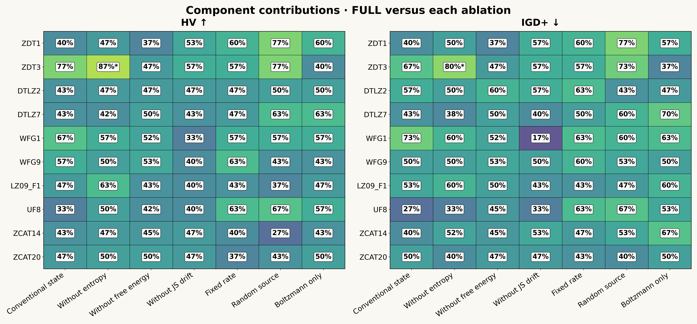
Each row is a fixed problem/M/D. Cells are paired seed-win percentages for FULL against the indicated ablation, with half-weight numerical ties. Stars require all 30 planned pairs and a Holm-adjusted p<.05 across the entire ablation block and both metrics. High win percentage alone is not a significant component contribution.
Vector PDF11 sensitivity hv
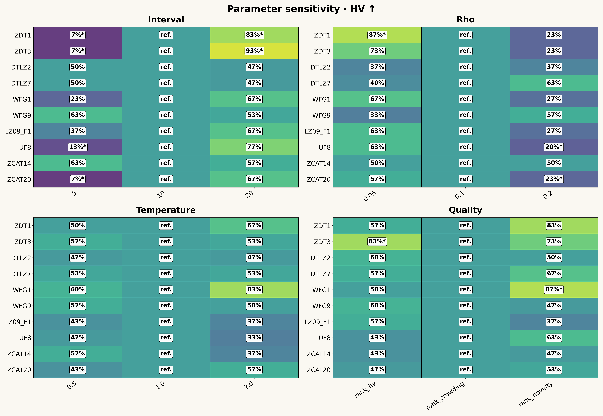
Default FULL versus one changed parameter at a time, paired within each row/task. Higher percentage means the default wins more often. The reference column is neutral by definition. Stars use 30 complete seeds and Holm over all four sensitivity studies and both indicators. This is the existing one-factor experiment, not a joint factorial response surface.
Vector PDF12 sensitivity igd plus
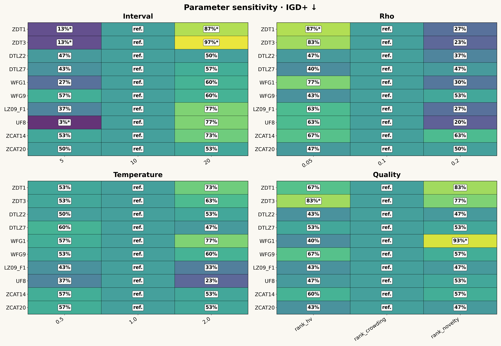
Default FULL versus one changed parameter at a time, paired within each row/task. Higher percentage means the default wins more often. The reference column is neutral by definition. Stars use 30 complete seeds and Holm over all four sensitivity studies and both indicators. This is the existing one-factor experiment, not a joint factorial response surface.
Vector PDF13 composition
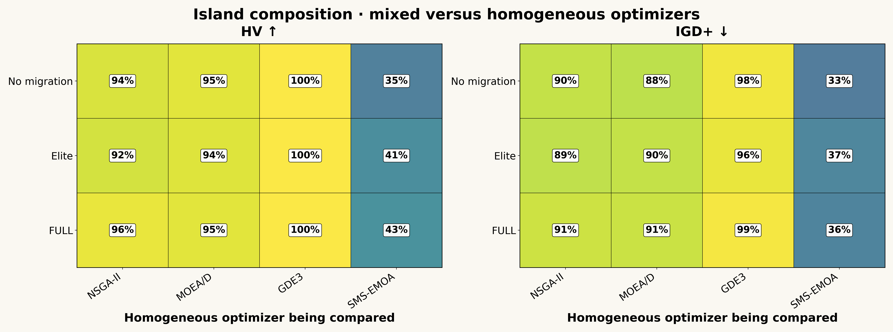
Every cell compares mixed and homogeneous islands under the SAME migration policy, problem/M/D, K, total population and FE budget. Percentages average within-problem paired wins, then weight problems equally. This displays the full composition-by-policy experiment; it does not attribute composition gains to the migration controller.
Vector PDF14 island count
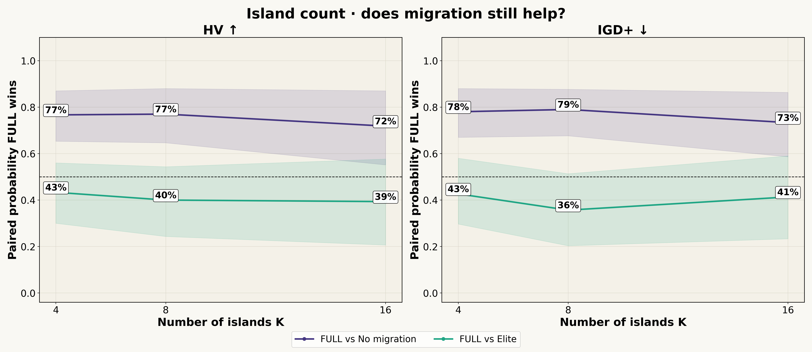
FULL is compared with no migration and elite separately within each K; there is no cross-K seed pairing. Each alternative uses the common set of available problems over the shown K values. Total population and FE budget follow the original fixed protocol. Bands use a hierarchical problem/seed bootstrap. K=4 is reused from the main experiment.
Vector PDF15 dimensions
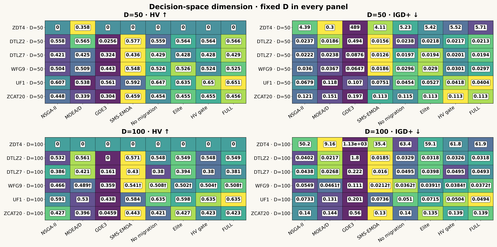
D=50 and D=100 are kept in separate panels. Numbers are actual within-task seed medians. Color is a within-row quality rank, not a shared raw scale. A dagger marks n<30; missing cells are empty. This descriptive matrix retains all eight planned methods and does not pool scores or pair genotypes across dimensions.
Vector PDF16 many objectives
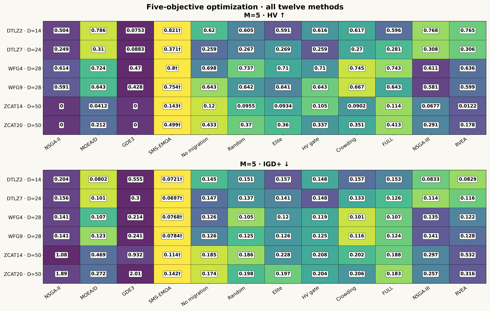
All twelve planned methods, including SMS-EMOA, NSGA-III and RVEA. Every row has one fixed problem/M/D. Numbers are raw seed medians, color is a within-row rank, and † indicates fewer than 30 repeats. No raw scores are averaged across functions or objective counts.
Vector PDF17 quality cost
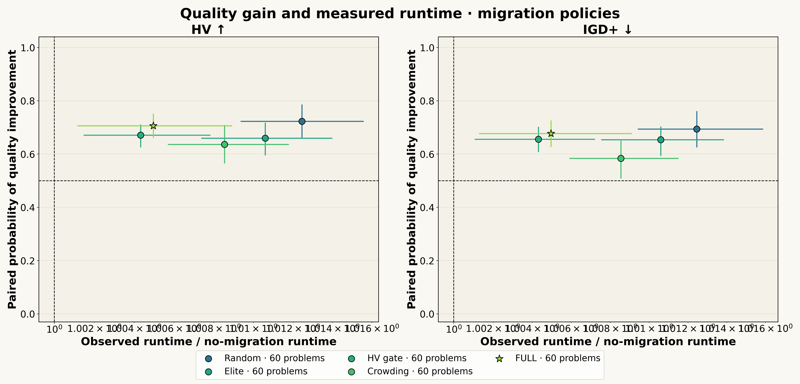
Every policy is compared with no migration at identical problem/M/D, population and budget with matched seeds/initial hashes. Quality is first averaged per problem. Runtime is the geometric mean of per-problem median paired ratios. Whiskers bootstrap problems. Shared-server load can affect observed wall time; these are not physical speedup or CPU-efficiency claims.
Vector PDF18 migration cost

Runs are reduced to a per-problem seed median, then to a median across problems; no raw quality scores are pooled. Sent, accepted and logical payload counters are normalized by the same FE budget. Controller and integration timers are measured wall-time shares. Logical bytes are not measured network traffic. Exact per-problem values and available panels are exported.
Vector PDF